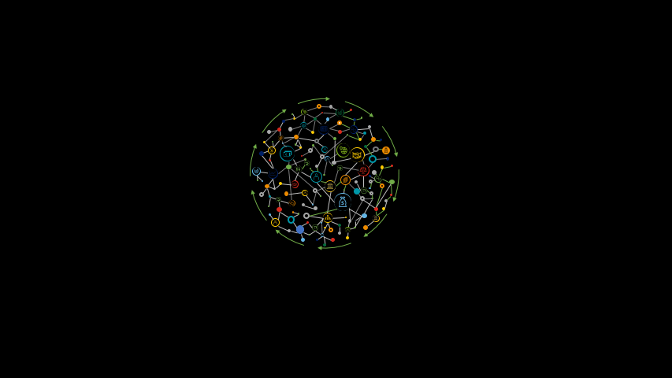
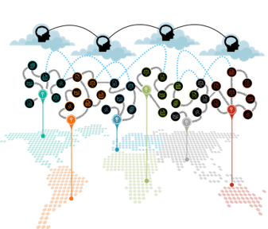
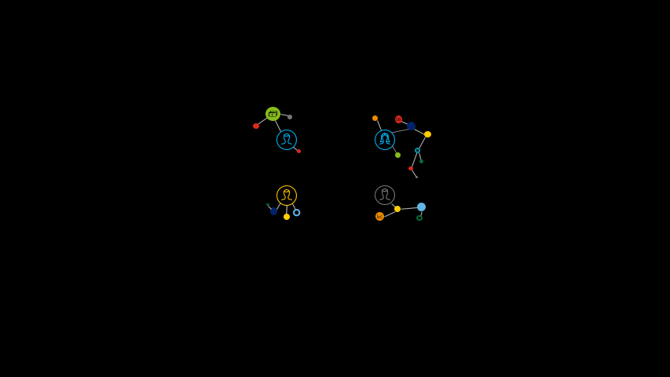

Knowledge Graphs allow companies to connect the dots in their business and see the big picture for evaluating risk and value.
360° View of Risk & Value
Applications
- Know your customer (KYC)
- Due Dilligence
- Investment Research
- Insurance Underwriting & Claim
- Commercial Real Estate

Knowledge Graphs allow companies to bring together different sources of compliance and apply automated compliance checks.
Compliance Management
Applications
- Trade Surveillance
- Insider Trading Surveillance

Knowledge Graphs allow companies to trace their data journey in the right context and improve the quality of their data flows.
Data Lineage & Metadata Management
Applications
- Risk Data Aggregation & Reporting
- Master Data Management
- Data Migration for Consolidating Mortgage Systems or On-Boarding New Data Feeds

Augmented analytics provided by Knowledge Graphs & ML enables companies to identify fraudulent patterns and investigate specific criminal links.
Fraud Detection & Financial Crime Analytics
Applications
- Spotting Fraud
- Anti Money Laundering
- Anti Terrorist Financing
- Identity Resolution & Access Management

Knowledge Graphs enable fact-based recommendations that accumulate contextual knowledge with each conversation.
Recommender systems & conversational AI
Applications
- Conversational Commerce
- Customer Service Chatbots
- Product Recommendations
- Enterprise Search & Content Classification
